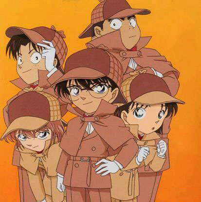

《名偵探柯南》
名探偵コナン／めいたんてい こなん
Detective Conan
日本漫畫家青山剛昌的著名推理漫畫作品《名偵探柯南》原作漫畫從1994年6月開始在《週刊少年Sunday》連載，之後被改編為各種系列的衍生作品，主要包括TMS製作的電視動畫、劇場版、OVA、漫畫特別篇，和真人電視劇。改編動畫於1996年播出即大獲好評，無論是情節還是案件，都得到評論家們的一致讚譽。
故事簡介
高中生偵探工藤新一，被稱為「日本警察的救世主」、「平成年代的福爾摩斯」。
某一天和青梅竹馬的同班同學毛利蘭在熱帶樂園遊玩時目擊黑暗組織的可疑行動，獨自前往交易現場時卻遭另一名同夥從背後偷襲擊昏，並灌下代號為「APTX-4869」的神秘藥物。
後來雖然倖免於死，但身體就此縮小為小學一年級時的模樣。
情急之下化名為江戶川柯南，在鄰居阿笠博士的建議下，寄住在毛利蘭的父親毛利小五郎家中。
同時他也憑藉著過人的推理能力，以及使用阿笠博士為他發明的各種道具，讓小五郎成為名偵探，並藉由平時的案件調查找尋有關黑暗組織的線索。
原黑暗組織的科學家宮野志保，負責研發毒藥「APTX-4869」。因故被組織監禁而吞下預藏的「APTX-4869」企圖自盡，身體卻意外縮小得以從垃圾口逃脫。
逃出組織的她為了尋找唯一可以依靠的人「工藤新一」而來到他家，卻因體力不支倒在門前，碰巧被阿笠博士發現並收留。之後她化名為「灰原哀」
而後柯南連同小哀加入了少年偵探團，一同解決了不少大小案件，雖然名義上說他們可以解決各種疑難事件，但是接到的委託大多是尋找小貓和小狗之類的無聊小事。

不過有時候這類事件的發展也會變成尋人或殺人案，還經歷過幾次尋寶事件，在這些事件中幾次陷入過危險的處境，幸好最後都靠江戶川柯南的智慧安然脫險。